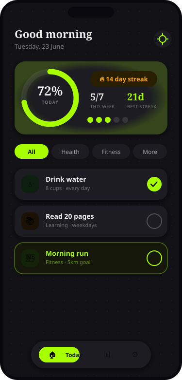
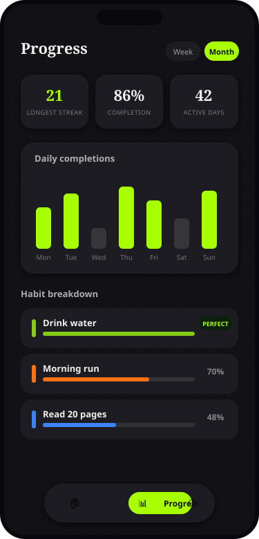
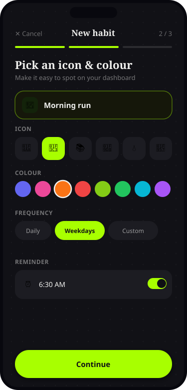
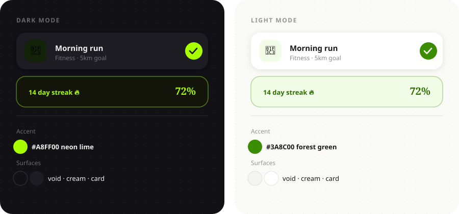

A mobile-first habit tracker designed to make daily check-ins feel effortless and progress feel obvious — from problem framing to a shipped, themeable design system.
Most habit trackers bury the one thing that matters — "did I do the thing today?" — under streak leaderboards, social feeds, and gamified clutter. People who just want a clean daily check-in and an honest view of their consistency end up abandoning the app within a week.
Logging a habit took multiple taps and screens, so the habit of tracking habits didn't survive past day three.
Streaks and stats were either missing or presented as raw numbers with no visual story of improvement.
Notification systems were all-or-nothing, with no per-habit control over time or frequency.
Wants to build a reading and fitness habit. Checks her phone constantly but has low patience for setup flows. Needs the app to feel done in under a minute a day.
Tracks deep-work and wellness habits across devices. Cares about dark mode, clean data visualization, and not being spammed by notifications.
The product is built around three screens — Today, Progress, and Settings — reached through a floating pill nav. Every interaction is designed to resolve in one tap, with motion and colour doing the work of confirming success instead of extra text.



Every colour is a CSS custom property expressed as RGB channels, so Tailwind opacity modifiers (bg-cream/90) work natively and the entire UI re-themes instantly — no flash of the wrong theme on load, no per-component overrides.

Defined core flows (onboarding, habit CRUD, check-ins, reminders, progress) and explicitly cut social features, gamification, and payments to keep v1 focused.
Established the dark/light colour system and motion tokens (spring easing, durations) before any screen, so every component inherited theming for free.
Progress ring, streak badge, and habit list with spring-physics check-ins — the single screen users open every day.
Recharts-driven analytics, per-habit breakdown, and Web Push reminders backed by a node-cron job on the Express API.
Shimmer skeletons, empty-state ghost cards, and an animated success modal so every state — not just the happy path — feels intentional.